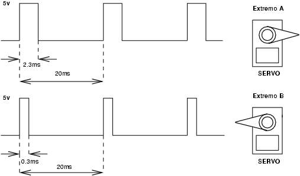
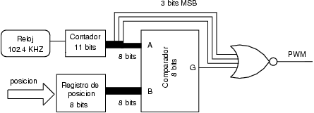

El objetivo principal de la aplicación Labobot es convertir la plataforma Labomat3 en un sistema de desarrollo para trabajar en robótica, y más concretamente aplicado al diseño de robots articulados. Para crear las articulaciones se emplean servomecanismos que se posicionan mediante señales PWM de 50Hz. Estas señales de control se suelen generar con microcontroladores de 8 bits. Mediante una plataforma reconfigurable, como la tarjeta Labomat3, se pretende delegar esta tarea en un hardware específico, liberando al microprocesador para realizar otros cálculos de más alto nivel.
Se propone como ejercicio el desarrollo un módulo en VHDL para la generación de las señales PWM para servos del tipo Futaba 3003. A través de un interfaz, el software que se ejecuta en el microprocesador debe posicionar los servos. Mediante unas librerías, el usuario debe poder controlar robots articulados sin tener que conocer los detalles de bajo nivel. Otro de los objetivos es optimizar el diseño hardware para determinar la cantidad máximo de servos que se pueden llegar a controlar, y así conocer el número máximo de articulaciones que pueden tener los robots diseñados.
Como aplicación práctica, se controlan 4 servos que permiten a dos minicámaras describir una secuencia de movimiento fija. Las especificaciones que debe satisfacer el prototipo son:
- Las señales de control de los servos son de 50Hz y una anchura del pulso comprendida entre 0.3 y 2.3ms (ver figura 2). Para su generación se emplea la unidad de PWM mostrada en la figura 3.
- El rango de movimiento del servo es de 180 grados. Se utilizan 8 bits para la posición, que está comprendida entre los valores 31 (un extremo) y 236 (el otro extremo). La precisión es de 0.88 grados.
- La posición deseada se almacena en un registro y se compara con el valor de un contador que determina el tiempo que la señal PWM permanece a nivel alto. La señal de reloj del sistema debe ser de 102.4 KHZ.


El hardware y software desarrollado se ha aplicado al control y posicionamiento de los servos de un sistema compuesto por dos minicámaras (ver figura 4). Cada una con dos grados de libertad. En el software hay una tabla de control que contiene las posiciones en las que situar los servos así como el tiempo que deben permanecer en ellas. El programa recorre la tabla y cuando termina vuelve a comenzar desde el principio. Las cámaras describen una secuencia de movimiento que se repite
Como principal resultado obtenido cabe destacar que se ha diseñado el software y hardware mínimo necesario para poder trabajar con robots articulados. El número máximo de servos que se pueden conectar es de 28, lo que permite controlar robots bastante complejos. Se dispone del hardware en VHDL para la generación de las señales PWM y de las librerías en C para permitir que el usuario pueda controlar los servos sin conocer los detalles de bajo nivel.
Para trabajar remotamente a través de la web con aplicaciones robóticas, el usuario necesita ver el robot para saber si se está moviendo correctamente, y para ello se ha utilizado una webcam. Aunque el número de imágenes no permite un seguimiento en tiempo real, si consigue dar una idea del correcto funcionamiento de la secuencia de movimientos.